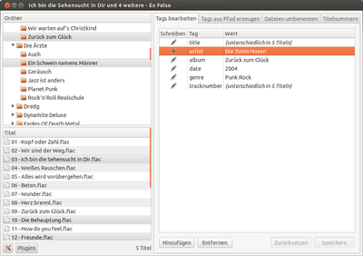

Ex Falso
Dieser Artikel wurde für die folgenden Ubuntu-Versionen getestet:
Ubuntu 14.04 Trusty Tahr
Zum Verständnis dieses Artikels sind folgende Seiten hilfreich:
Ex Falso  ist ein umfangreiches Programm zum Bearbeiten der Metadaten (Tags) und Umbenennen von Audiodateien, das durch seine schlichte Oberfläche besticht. Ex Falso war ursprünglich ein fester Bestandteil des Musik-Players Quod Libet, wurde aber auf Grund der Nachfrage als eigenständiges Tool ausgegliedert.
ist ein umfangreiches Programm zum Bearbeiten der Metadaten (Tags) und Umbenennen von Audiodateien, das durch seine schlichte Oberfläche besticht. Ex Falso war ursprünglich ein fester Bestandteil des Musik-Players Quod Libet, wurde aber auf Grund der Nachfrage als eigenständiges Tool ausgegliedert.
Unterstützte Formate sind MP3, Ogg Vorbis, FLAC, Musepack (MPC), WavPack und MOD/XM/IT. Da das Programm auf GTK basiert, eignet es sich für die Desktop-Umgebungen GNOME, Xfce und LXDE, arbeitet prinzipiell aber desktopunabhängig. Die zugrundeliegende Bibliothek Mutagen wird auch von anderen Audioplayern wie z.B. Exaile genutzt.
 Das Programm bietet unter anderem:
"Freiform"-Tagbearbeitung für die meisten unterstützten Formate, einschließlich ID3v2 (Tagfelder können beliebig hinzugefügt, entfernt und modifiziert werden)
Mehrere Werte für Tag-Felder
Flexibles "Umbenennen nach Tags" und "Taggen nach Dateinamen"
Erweiterbar durch einfache Python-basierte Plugins
Bearbeiten mehrerer Dateien unterschiedlichen Formats in einem Durchgang
Das Paket quodlibet-plugins bietet unter anderem folgende nennenswerte Plugins:
MusicBrainz und CDDB/FreeDB zur automatischen Tag-Vervollständigung
Export von Playlisten als HTML-Datei
Export von Jabber JEP-188 Dateien
CD brennen mit K3b
Installation¶
Für Ex Falso müssen folgende Pakete installiert [1] werden:
exfalso (universe)
quodlibet-plugins (universe, optional )
 mit apturl
mit apturl
Paketliste zum Kopieren:
sudo apt-get install exfalso quodlibet-plugins
sudo aptitude install exfalso quodlibet-plugins
Nach der Installation kann das Programm gestartet werden. [2]
Oberfläche/Benutzung¶
Die Oberfläche von Ex Falso ist aufgeräumt und leicht zu überschauen, was die Benutzung eigentlich selbsterklärend macht. Die Oberfläche ist in drei große Bereiche aufgeteilt:
Verzeichnisse
Titel
Funktionen
Tags bearbeiten
Tags aus Dateinamen erzeugen
Dateien umbenennen
Titelnummern
Der Bereich "Verzeichnisse" besteht aus einem Dateibrowser, mit dem man durch seine Ordner auf der Festplatte navigieren kann. In ihm kann man zunächst einen oder – durch Verwendung der Tasten Strg bzw. ⇧ – mehrere Ordner auswählen.
Alle von Ex Falso unterstützten Dateien, die in diesen Ordnern zu finden sind, werden nun im Bereich "Titel" aufgelistet, aus dem man wiederum eine – oder durch Verwendung der Tasten Strg bzw. ⇧ – mehrere Dateien auswählen kann. Ausgewählte Dateien werden im großen Bereich auf der rechten Seite angezeigt. Die Dateien im Bereich "Titel" müssen nicht das gleiche Format besitzen. Unterschiedliche Formate können beliebig miteinander vermischt werden. Da die Funktionen, die Ex Falso bietet, selbsterklärend sind, soll hier nicht näher darauf eingegangen werden.
Um weitere Plugins zu aktivieren, ruft man die Plugin-Verwaltung über den Button "Plugins" auf, der sich am unteren linken Rand befindet. Hier können nun verschiedene Plugins aktiviert und deaktiviert werden. Die Funktion der Plugins kann man schließlich über das Kontextmenü  der einzelnen Audiodateien im Bereich "Titel" aufrufen.
der einzelnen Audiodateien im Bereich "Titel" aufrufen.
 Programmübersicht
Programmübersicht- Erstellt mit Inyoka
-
 2004 – 2017 ubuntuusers.de • Einige Rechte vorbehalten
2004 – 2017 ubuntuusers.de • Einige Rechte vorbehalten
Lizenz • Kontakt • Datenschutz • Impressum • Serverstatus -
Serverhousing gespendet von